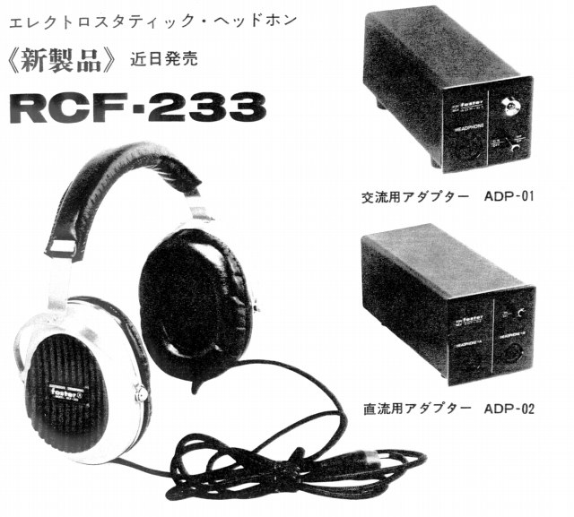
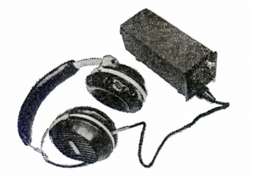
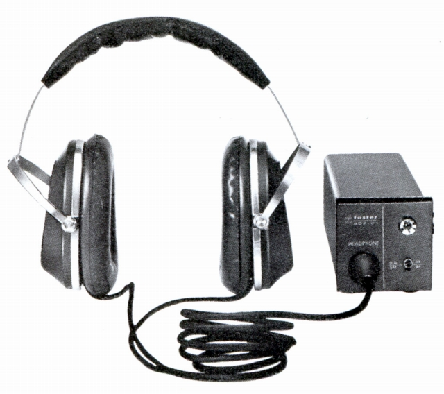

RCF-233

■価格 9,900円
■型式 コンデンサー型
■振動板 6ミクロン厚
■インピーダンス
■再生周波数帯域 20〜20,000Hz
■許容入力 5W
■感度
■コード
■重量 370g
■発売 1971〜72年頃
■販売終了 1972〜73年頃
■備考
アダプタが交流用、直流用の2種、計画されていた。
実際の販売で選択可能だったかは不明。
ブラックバージョンもあったらしい。こちらは片出しケーブルだ。

1972年の「ステレオ」誌のテストに登場しているが、コンデンサー型としては「線の太い音質（江川三郎氏）」モデルだったらしい。
どことなくコスの初期のコンデンサー型を思わせるデザイン、音質だ。

同じく1972年版カタログの画像、ブラックモデルで交流用アダプター付属。しかしコードは両出しである。
かつて「STAX Unofficial Page」にのっていた「Realistic
HP-100」のベースモデルか？
また「marantz SE-1S」も本体のアウトラインはこのモデルのブラックバージョンに似ている。
「marantz
SE-1S」は1974年頃販売されていたコンデンサー型ヘッドフォンで、
スーパースコープ社傘下での同ブランドの拡張期の製品である。こちらもブランド
の性質上、一から自主開発したとは思えない製品である。